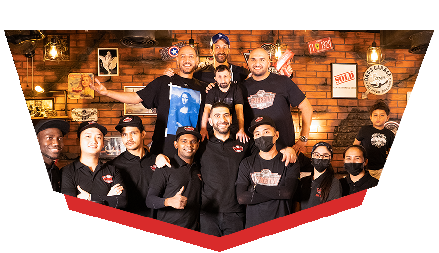

Founded in 2011, in the heart of Jabal Amman, Firefly takes its roots from the founders' passion for travel and their deep love for food. Our mission is simple yet profound: to create an unforgettable, tantalizing culinary journey for our cherished customers. Through a steadfast commitment to using only the finest ingredients in our burgers and sauces, Firefly has enjoyed continuous growth since its inception. Our motto, "Above All Burgers," is not just a tagline; it's a guiding principle that embodies our unwavering dedication to providing the best burger experience possible.
Dining at FireFly is not just a meal; it's an immersive experience where our attention to atmosphere and aesthetic sets the stage for your memorable dining journey. stepping through our doors, you'll be embraced by an ambiance that seamlessly combines modern sophistication with a touch of rustic charm.